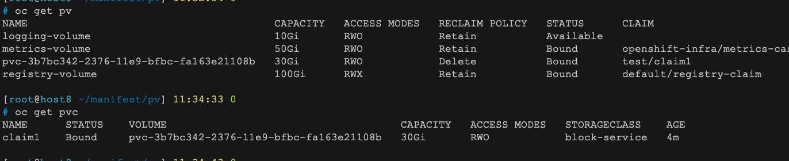
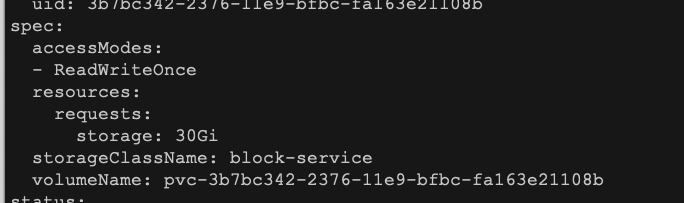

PV&PVC
概念
- PVC 可以理解为持久化存储的“接口”，它提供了对某种持久化存储的描述，但不提供具体的实现；而这个持久化存储的实现部分则由 PV 负责完成。
- 专门处理持久化存储的控制器，叫作 Volume Controller。
- PersistentVolumeController
两阶段处理
- 为虚拟机挂载远程磁盘的操作 Attach
- 磁盘设备格式化并挂载到 Volume 宿主机目录的操作，对应的正是“两阶段处理”的第二个阶段，我们一般称为：Mount
- kubelet 需要作为 client，将远端 NFS 服务器的目录（比如：“/”目录），挂载到 Volume 的宿主机目录上
- 区别两阶段
- 对于“第一阶段”（Attach），Kubernetes 提供的可用参数是 nodeName，即宿主机的名字。
- 而对于“第二阶段”（Mount），Kubernetes 提供的可用参数是 dir，即 Volume 的宿主机目录。
操作原理
- 第一阶段的 Attach（以及 Dettach）操作，是由 Volume Controller 负责维护的，这个控制循环的名字叫作：AttachDetachController。
- 第二阶段的 Mount（以及 Unmount）操作，发生在 Pod 对应的宿主机上，是 kubelet 组件的一部分。这个控制循环的名字，叫作VolumeManagerReconciler
StorageClass
- 第一，PV 的属性。比如，存储类型、Volume 的大小等等。
- 第二，创建这种 PV 需要用到的存储插件。比如，Ceph 等等。

PV和PVC绑定关系


- 所谓将一个 PV 与 PVC 进行“绑定”，其实就是将这个 PV 对象的名字，填在了 PVC 对象的 spec.volumeName 字段上。
Local Persistent Volume
- 本地磁盘抽象成PV
- 保证Pod始终正确的调度到所请求的Local Persistent Volume
- 延迟绑定
- 正是由于需要使用“延迟绑定”这个特性，Local Persistent Volume 目前还不能支持 Dynamic Provisioning